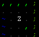
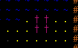

Schatten
Schatten Drache
Drache| Taste | Aktion | Taste | Aktion | |
|---|---|---|---|---|
w | Schritt nach oben (Norden) | q | Schritt nach Nordwesten | |
s,x | Schritt nach unten (Süden) | e | Schritt nach Nordosten | |
a | Schritt nach links (Westen) | y | Schritt nach Südwesten | |
d | Schritt nach rechts (Osten) | c | Schritt nach Südwesten | |
h | Eventlog aufrufen | o | Hilfe aufrufen |
In der Welt von Adventure at Umalu gibt es zwei Arten von Gegenständen: Rüstungen und Schwerter.
Während Rüstungen als Goldene Zeichen auf der Karte sichtbar sind (wie unten sichtbar), müssen Waffen gefunden werden indem man gegen Monster kämpft.
Je weiter man in das Bergmassiv kommt, desto mächtiger sind gleichzeitig auch die Gegenstände die von anderen, nicht erfolgreichen Abenteurern hinterlassen wurden. Doch dabei ist der Platz in seinem Rucksack gering und der Abenteurer muss daher genau überlegen, welche Gegenstände er mitnimmt und welche nicht:
Um einen Gegenstand anzulegen, wechselt man mit i in das Inventar, wählt den anzulegenden Gegenstand mit der entsprechend Zahlentaste aus und bestätigt mit s.
Der Platz im Inventar des Helden ist sehr knapp. Neben den beiden angelegten Gegenständen, kann er nur 5 weitere mitnehmen. Soll er einen Gegenstand dauerhaft zerstören, so wechselt man mit i in das Inventar, wählt einen der bis zu 5 nicht angelegten Gegenstände mit der entsprechenden Zahlentaste aus und drückt dann d.
| Zombie | Giftiger Frosch | |||
| Orc | Fette Nacktschnecke | |||
| Ungläubiger | Schatten | |||
| Drache | ||||
In dem Berg Umalu wurden mit der Rückkehr des Gottes Kremsgrdr verschiedene Kirchen gebaut.

Begibt sich der Spieler auf hinein, so ist er dort vor den Angriffen der Ungeheuer geschützt und lädt schneller seine Lebenspunkte wieder auf.